Caminhonetes
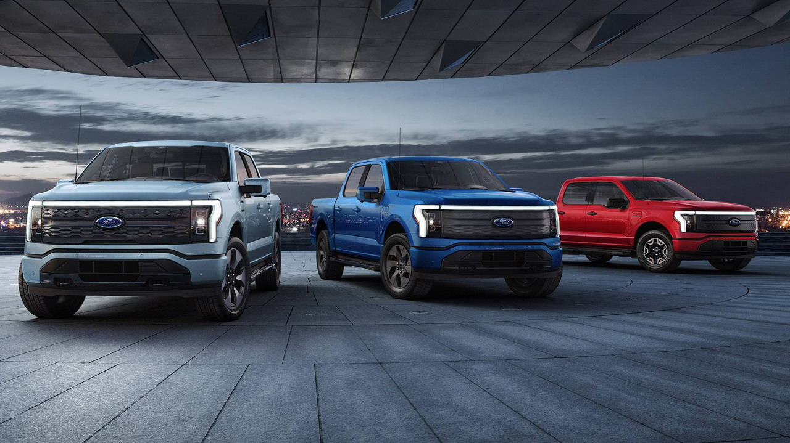
Camionete ou caminhonete, também referidos como picape, é um tipo de veículo automotor destinado a carga, com peso bruto total não superior a 3.500kg, que possui a parte superior traseira aberta, quase sempre separada da cabine.Segundo o Código de Trânsito Brasileiro, significa: veículo de carga, pequeno caminhão, pois passageiros e cargas são transportados em compartimentos separados.
História
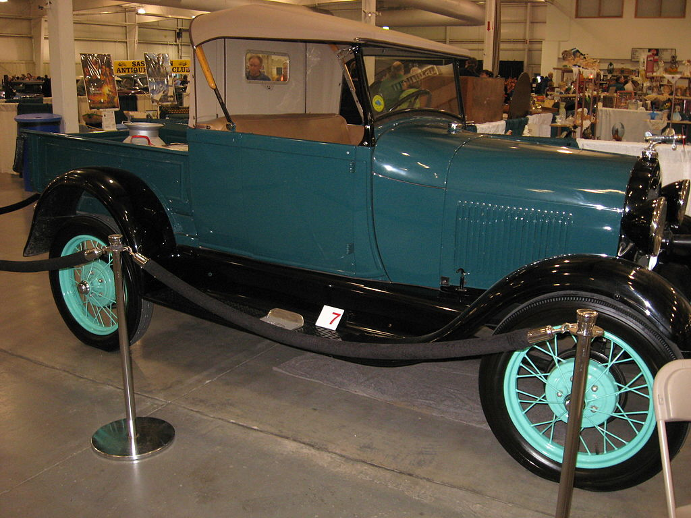
A primeira caminhonete a ser fabricada foi baseada no carro Ford Model T, com a traseira modificada. Ele estreou em 1925 e vendido por 281 dólares. Os 34.000 fabricados no primeiro ano apresentava uma caixa de carga traseira regulável.
Em 1928, o Modelo A substituiu o Modelo T, introduzindo a carrinha com cabine fechada. Ele ostentou inovações como um para-brisa de vidro de segurança, janelas roll-up-side e de transmissão de três velocidades. Era alimentado por um motor L quatro cilindros com quarenta cavalos (30 kW).
Em 1932, com 65 cavalos de potência (48 kW) Ford Flathead V8 foi oferecido como uma opção no caminhão.
Em 1934, um veículo foi lançado na Austrália, conhecido como "ute". Foi desenhado por Lewis Bandt da Ford Austrália.
.jpg) 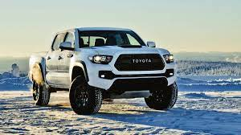
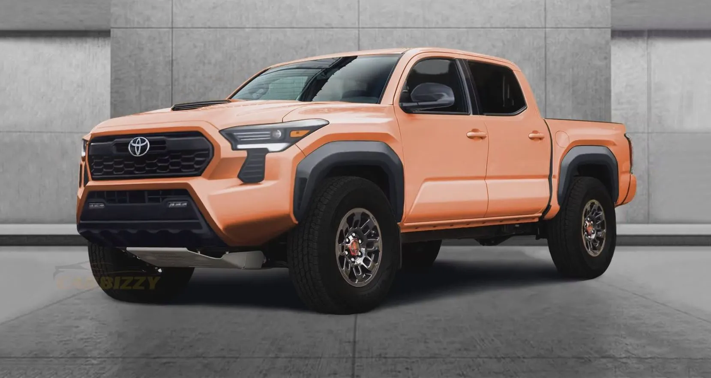
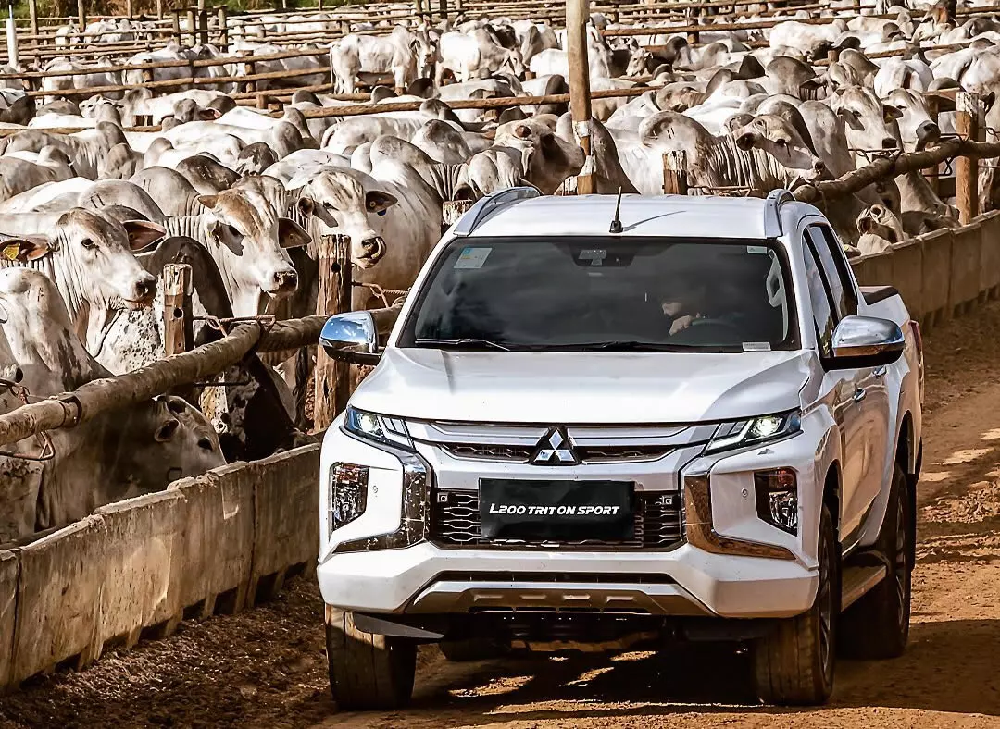
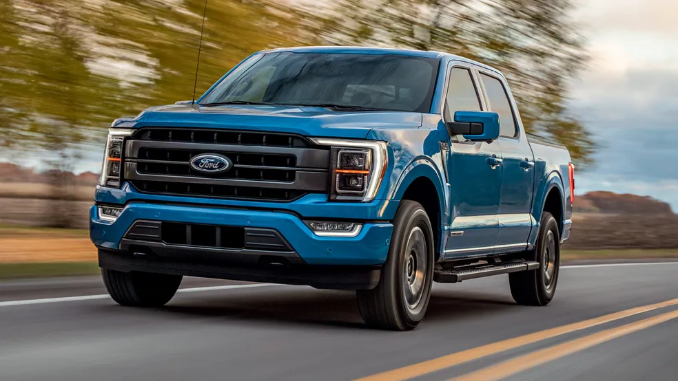
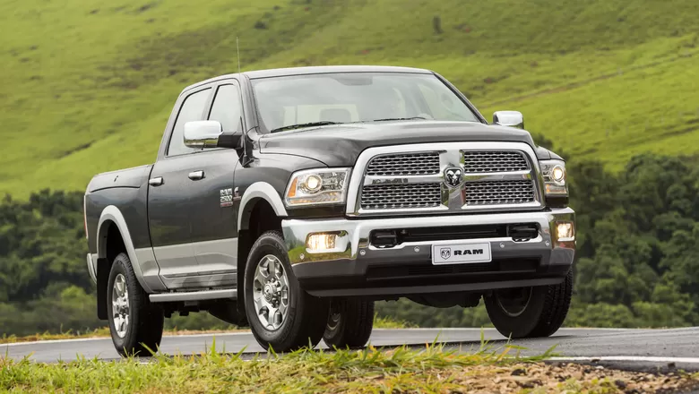
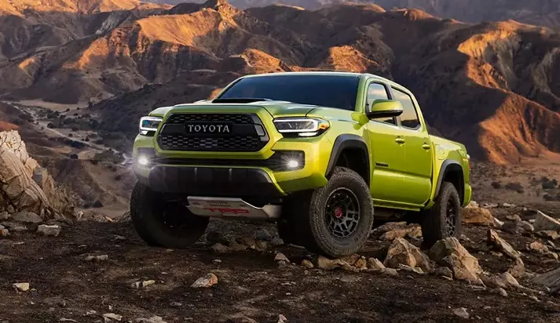
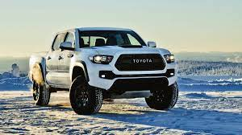
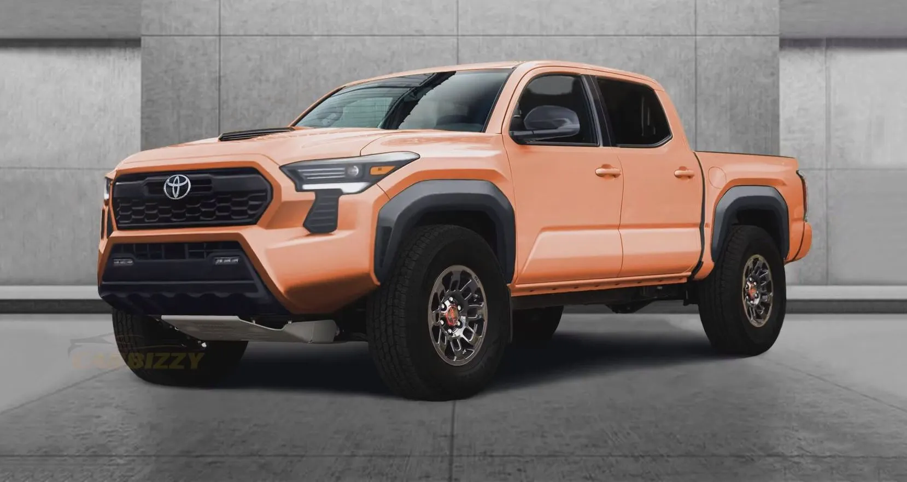
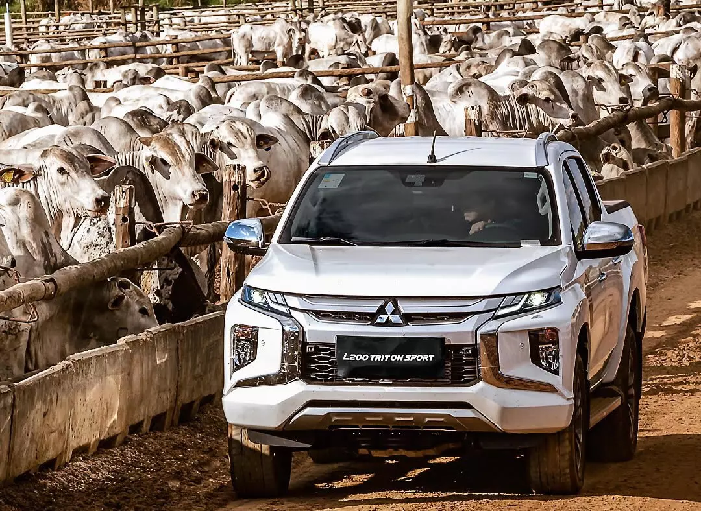
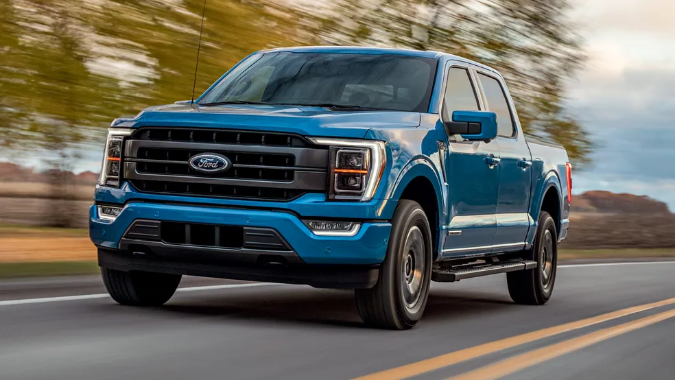
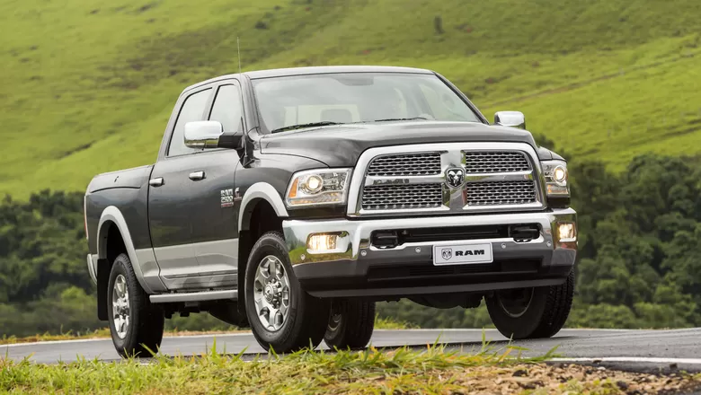
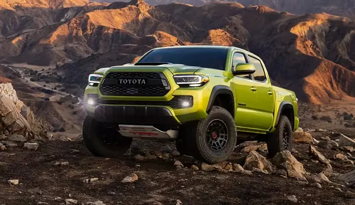